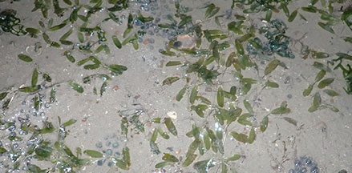
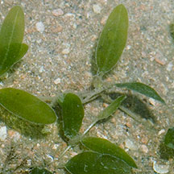
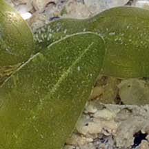
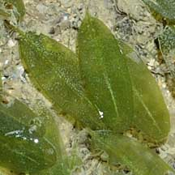
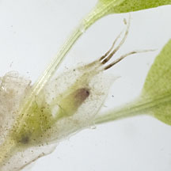
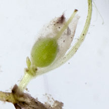
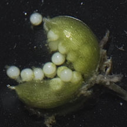

|
|
|
seagrasses
text index | photo
index
|
| Seagrasses > Family Hydrocharitaceae |
| Hairy
spoon seagrass Halophila decipiens Family Hydrocharitaceae updated Mar 14 Where seen? This elongated oval seagrass with hairy leaves is usually seen in deeper waters, and sometimes also on the intertidal. Hairy spoon seagrass is the only pan-tropical seagrass species and found in the Caribbean and Indo-Pacific. This global distribution is believed to be the result of recent colonisation as there is little genetic divergence among the plants. This suggest that the species is capable of long distance dispersal. It is found from deeper waters and also in reef and sandy habitats. It seems tolerant of low light conditions and in very clear waters has been recorded (elsewhere) to depths greater than 50m. Features: The seagrass has oval leaves that are longer (1-2.5cm) than the width (0.5cm). There are minute serrations on the leaf edge and minute hairs on both sides of the leaf. It has thin, smooth, white rhizomes (underground stems). The leaves emerge in pairs from these rhizomes. Flowers and fruits: Small green fruits (0.5cm) contain up to 30 tiny seeds. The species sometimes behaves as an annual, growing, flowering, setting seed and dying in a short period of time. Role in the habitat: This seagrass may be an important food source for marine grazers. Status and threats: It was first recorded in Singapore in 2008, from specimens found off Pulau Semakau at a depth of about 8m. It has since been sighted at other locations in waters off the Southern islands and on the intertidal in the North. |
 Beting Bronok, Jul 20 |
|
 Pulau Sekusu, Jul 07 |
 Minute hairs on the leaf. Changi Apr 09 |
 Leaf blade longer than wide. Changi Apr 09 |
|
 Flower. Pasir Ris Park, Aug 13 |
 Fruit Pasir Ris Park, Aug 13 |
 Seeds. Pasir Ris Park, Aug 13 |
| Hairy spoon seagrass on Singapore shores |
On wildsingapore
flickr
|
Links
References
|
|
|
|
You CAN make a difference for Singapore's seagrasses!  |